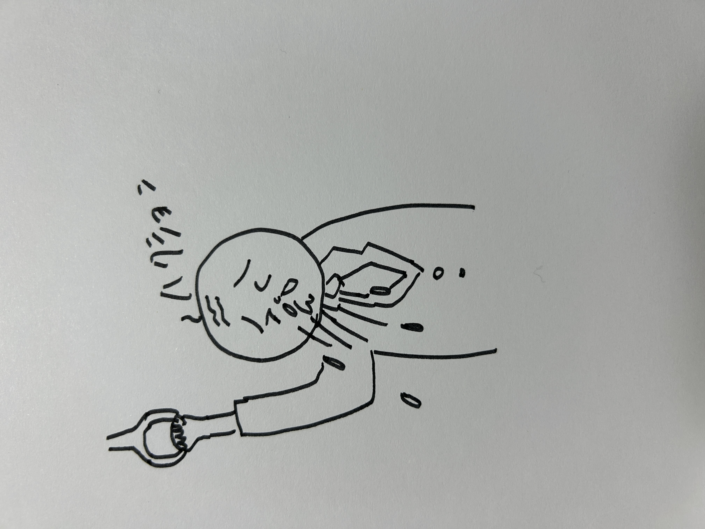
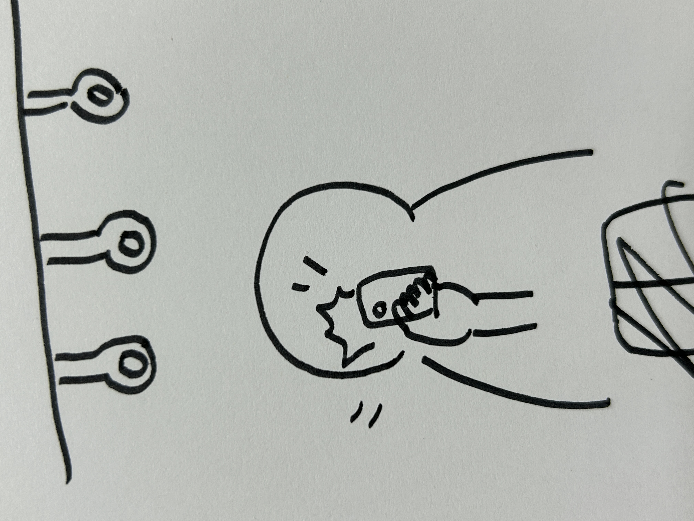
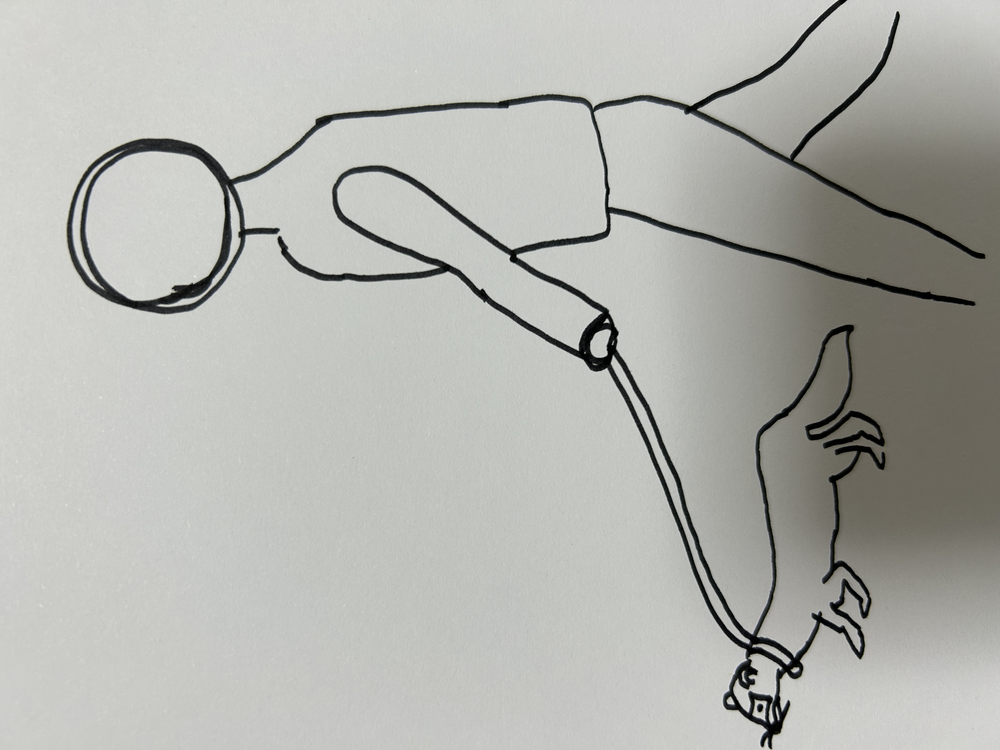

観察課題
＜電車でくしゃみをしたときに鼻水がしまったおじさん＞

印象に残った理由
くしゃみをしたときふつう手で押さえるか鼻水が出てしまったらティッシュでふくのに豪快にくしゃみをしてそのあと一生懸命出た鼻水をすっていたので印象に残った。
＜電車の中でBe Realを撮っている人たち＞

理由
電車の中でひとりで自撮りしている人が何人かいたので印象に残った。
＜公園でフェレットを散歩している人＞

理由
犬を散歩しているひとはよく見るがフェレットを散歩している人は初めて見た。